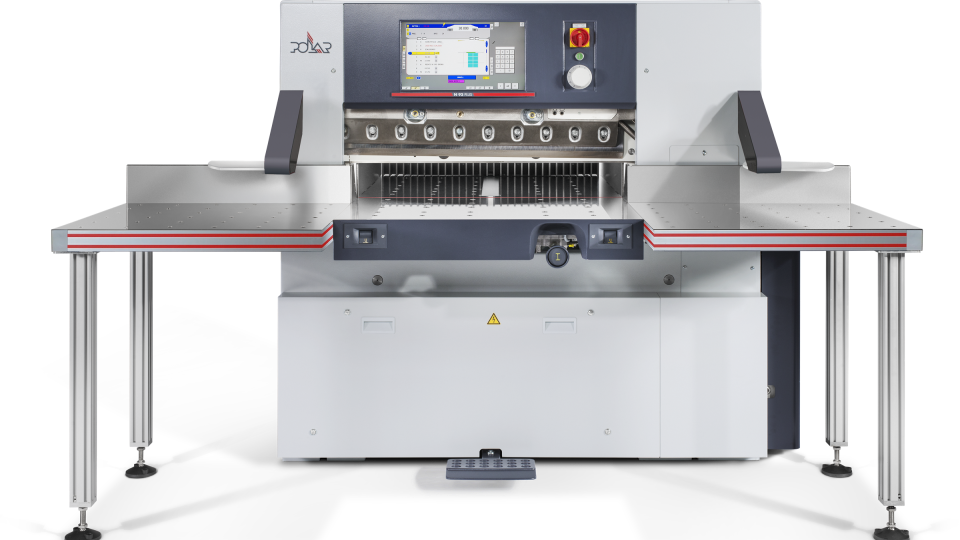

Precision cutting
Accurate trimming and reel conversion for downstream finishing and dispatch.
Precision cutting prepares printed stock into required sheet sizes and finished stacks for the next production stage. This section supports Heidelberg POLAR guillotine accuracy and Ruihai reel conversion where steady output, cleaner edge presentation and repeat sizing control are essential.
Cutting programs are managed to maintain cleaner edges, reliable dimensions and better stack quality.
POLAR machines support straight cutting accuracy for production-ready stacks across repeated programs.
Ruihai reel cutting support helps convert continuous material into production-ready sheets for onward processing.
